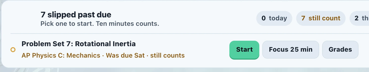
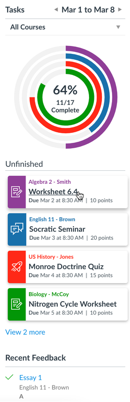

Now · the banner at the top, and the week box under it in the rail

Three places say the same thing: this banner, the week box, and Canvas's own To Do under it. The counts read as buttons. "Still count" is our word, not the student's. The amber is the loudest ink on the page.
Tasks for Canvas · what students install next to BetterCampus

One widget, in the rail, where the eye already goes. A ring per course in the course colour. One list. Their default To Do hidden.
Proposed · one rail widget, on our tokens
This week‹Sep 7 to 13›
- AP Physics C1/3
- English 110/1
- Ceramics I1/1
- Intro Lab1/2
Start with
Problem Set 7: Rotational Inertia
AP Physics C · was due Sat · late work still counts
StartFocus 25 min
Then
Problem Set 8: Angular Momentum
AP Physics C · Thu 5:03am · 50 pts
Comparative essay: Douglass and Jacobs
English 11 · Fri 11:59pm · 100 pts
Lab writeup: Conservation of Momentum
AP Physics C · was due Sep 6
Grade Lab 1 report
Intro Lab · Sat 5:03am · 10 pts
Canvas To Do · 10 itemsShow
Rings per course, in the course's own colour. The one thing to start, then the rest as a list. Canvas's To Do folds to one line, one click to put back. The banner goes; the cards come back up to the top.